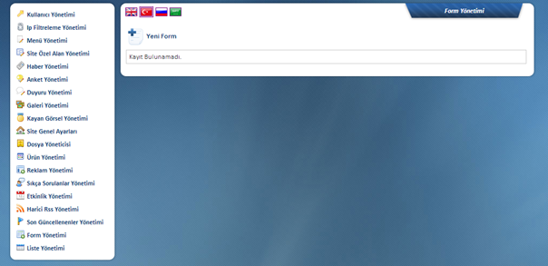
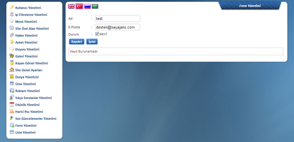
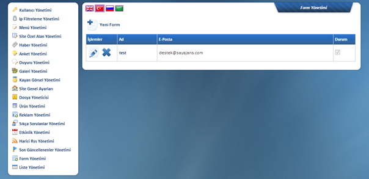
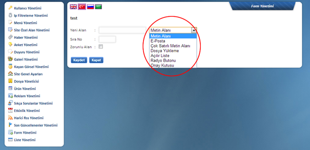
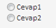
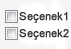

Bu alandan birkaç dakika içerisinde ve oldukça basit bir þekilde web sitenizde ihtiyaç duyacaðýnýz yeni formlarý oluþturabilir, doldurulduðunda içeriðinin gelmesini istediðiniz eposta adresini belirtebilirsiniz. Örneðin staj ve iþ baþvuru formlarý ik@domainadresiniz.com a giderken, ürün ve hizmetleriniz hakkýnda bilgi almak isteyen potansiyel bir müþterinizin dolduracaðý form bilgi@domainadresiniz.com ya da satis@domainadresiniz.com gibi bir adrese gönderilebilir.

Yeni Form Butonuna Týklandýktan Sonra

Formun adý ve formun gönderileceði e-posta adresi eklenir ve Aktif / De-Aktif yönetimini saðlayarak yeni bir form oluþturulur.

Oluþturulan Form Ýsmine Týklanýnca

Yeni Alan: Form için istenen bilgiyi sordunuðunuz alandýr.Örneðin formda kiþinin adýný soracaðýnýz alan burasýdýr ve Yeni Alan yerine “Ad-Soyad” yazabilirsiniz. Yeni Alan yazýsýnýn hemen yanýnda olan seçenekler, formun cevap alanlarýný oluþturur.
Metin Alaný:
Verilen cevabýn kýsa olacaðý düþünülüyorsa seçilmesi gerekir.
Örneðin cep telefon bilgileri alýnmak istendiðinde telefon bilgisi kýsa
olacaðýndan bu alanýn seçilmesi önerilir.
E-posta:
Verilen cevapta e-posta adresi yazmasý gerekli ise seçilir.
Çok Satýrlý
Metin Alaný: Verilen cevabýn uzun olmasý düþünülüyor ise
seçilmelidir.Örneðin adres sorusuna verilen cevap uzun olabileceði için bu
seçeneðin seçilmesi önerilir.
Dosya Yükleme:
Formu dolduran kiþinin bir dosya ekleyebileceði seçenektir. Örneðin Cv nin
yüklemesini istediðiniz alan için bu seçenek seçilmelidir.
Açýlýr Liste:
Seçeneklerin görüntülenir ve bir seçenek seçilebilmektedir.Yukarýdaki görselde
kýrmýzý olarak gösterilmiþtir.
Radyo
Butonu: Formu dolduran kiþi oluþturduðunuz seçenekler arasýndan tek
seçenek seçebilmektedir.Örneðin bir sorunuzun cevabý “Evet” veya ”Hayýr”
þeklinde olacak ise bu buton kullanýlabilir.
Onay Kutusu: Formu dolduran
kiþi birden çok seçeneði iþaretleyebilir. Örneðin kiþi hobilerini seçerken
birden çok seçenek seçebilmelidir, bu nedenle bu butonun kullanýlmasý önerilir.